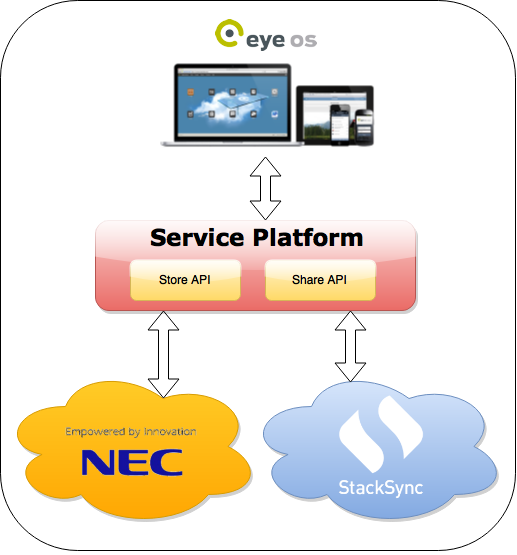
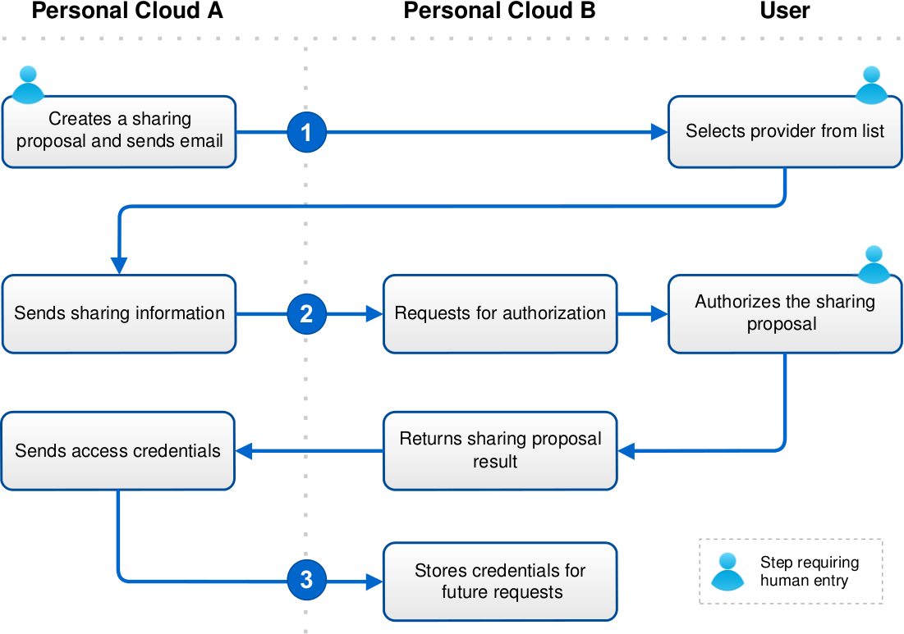

Service Platform
Overview
| eyeOS Virtual Desktop | https://github.com/cloudspaces/eyeos-u1db |
| Share API Protocol | https://github.com/cloudspaces/interop-protocol |
| Store API Specification | https://github.com/stacksync/swift-API/blob/master/StackSync_API_Specifications.md |
Introduction
This document describes an open service platform for Personal Clouds including a number of services ensuring both horizontal and vertical interoperability.
Horizontal interoperability is focused on exchanging and sharing information between heterogeneous Personal Clouds. It includes services for data storage and sharing to shared workspaces. Horizontal interoperability will be demonstrated between StackSync and NEC Personal Clouds using the Share and Store APIs.
First, we describe the first version of the sharing protocol, which will enable different Personal Clouds to share resources among them via an API, without forcing users to be in the same provider. More generally, the sharing protocol creates a freely-implementable and generic methodology for allowing Personal Cloud interoperability. We provide the protocol specification as well as different use case scenarios that the protocol may face.
Next, we describe the storage API in Section 5. This API is meant to consolidate a standard among Personal Clouds to achieve an easier interoperability and facilitate access to third parties. We specify the different actions and resources available as well as the needed parameters to perform queries and the distinct error codes available.
Vertical Interoperability refers to external third-party applications accessing a Personal Cloud. Vertical interoperability will be demonstrated thanks to the eyeOs web desktop infrastructure and tools. eyeOS services like eyeFiles and eyeCalendar will demonstrate the aforementioned Store and Share services.
The goal of this platform is that users retake control of their information stored in Personal Cloud. Users can decide how (access control) and whom (users, applications) can access information stored in their Personal Clouds. The service platform offers open specifications that may be adopted by third-party providers (Personal Clouds, Applications) and thus break the fragmentation of the market and its implicit vendor lock-in.

Share API
The sharing protocol enables different Personal Clouds to share resources among them via an API, without forcing users to be in the same provider. More generally, the sharing protocol creates a freely-implementable and generic methodology for allowing Personal Cloud interoperability
Prerequisites
Having two Personal Clouds (Personal Cloud 1 and Personal Cloud 2) that pretend to interoperate with each other. They must meet the following requirements before using the present specification.
- Once the sharing process is completed, Personal Clouds must use APIs to access protected resources. In case they do not implement the Storage API proposed bellow, Personal Cloud 1 must implement an adapter to access Personal Cloud 2 API, and vice versa.
- Personal Cloud 1 must be registered in Personal Cloud 2 and validated as an authorized service in order to obtain its credentials, and vice versa. The method in which Personal Clouds register with each other and agree to cooperate is beyond the scope of this specification.
Request URL
The sharing protocol defines three endpoints:
- Share URL. The URL used to present the sharing proposal to the user and obtain authorization.
- Unshare URL. The URL used to finish the sharing agreement.
- Credentials URL. The URL used to provide the access credentials.
Interoperability process overview
The sharing protocol is done in three steps:
- User A invites User B to its folder located in Personal Cloud A.
- Personal Cloud A creates the sharing proposal.
- Personal Cloud A sends the access credentials to Personal Cloud B

In the last figure, we can observe the sharing process divided in the three steps commented above. First, a user in Personal Cloud A expresses its intention of sharing a file with a external user (User B). Personal Cloud A will send an email with information about the proposal to the external user. The external user will select its favourite Personal Cloud, in which it has an account, namely Personal Cloud B. In the second step, Personal Cloud A will create the sharing proposal and send it to Personal Cloud B, which will require User B to authorize the proposal. The result of the proposal will be returned to Personal Cloud A. Finally, Personal Cloud A will hand the access credentials over the Personal Cloud B, granting forthcoming access to the shared resource.
User Invitation
- User sends an invitation: User A wants to share a folder with User B. Therefore, User A goes to Personal Cloud A, selects the folder he/she wants to share, and introduces the email of User B, who will receive an email indicating the intention of User A to share a folder with him/her and a link to a website located on Personal Cloud A.
- The recipient selects its Personal Cloud: User B clicks on the link and is taken to the Personal Cloud A, where it is asked to select its Personal Cloud from a list of services that have an agreement with Personal Cloud A. User B selects Personal Cloud B.
- Creating the sharing proposal: At this time, Personal Cloud A creates the sharing proposal. To create a sharing proposal, Personal Cloud A sends an HTTP request to Personal Cloud B’s share URL. The Personal Cloud B documentation specifies the HTTP method for this request, and HTTP POST is RECOMMENDED.
Field Description share_id A random value that uniquely identifies the sharing proposal resource_url An absolute URL to access the shared resource located in Personal Cloud A. owner_name The name corresponding to the owner of the folder owner_email The email corresponding to the owner of the folder folder_name The name of the folder permission Permissions granted to the recipient. Options are READ-ONLY and READ-WRITE. recipient The email corresponding to the user who the folder has been shared with callback An absolute URL to which the Personal Cloud B will redirect the User back when the Accepting the invitation step is completed. protocol_version MUST be set to 1.0. Services MUST assume the protocol version to be 1.0 if this parameter is not present
Invitation acceptance
- The user accepts the proposal: Personal Cloud B displays User B the details of the folder invitation request. User B must provide its credentials and explicitly accept the invitation.
- Returning the proposal response: Once Personal Cloud B has obtained approval or denial from User B, Personal Cloud B must use the callback to inform Personal Cloud A about the User B decision. Personal Cloud B uses the callback to construct an HTTP GET request, and directs the User’s web browser to that URL with the following values added as query parameters:
Field Description share_id A random value that uniquely identifies the sharing proposal accepted A string indicating whether the invitation has been accepted or denied. true and false are the only possible values
Access Credentials
- Granting access to the service:
When Personal Cloud A receives the proposal result it must provide the access credentials to Personal Cloud B in order to be able to obtain the shared resource. Personal Cloud A sends an HTTP request to Personal Cloud B’s credential URL. The Personal Cloud B documentation specifies the HTTP method for this request, and HTTP POST is recommended.
Personal Cloud A specifies what type of authentication protocol and version must be used to access the resource. To this end, Personal Cloud B must check the auth_protocol and auth_protocol_version parameters. The authentication protocol and version used by Personal Cloud A is beyond the scope of this specification, but OAuth 1.0a or OAuth 2.0 is recommended.
Field Description share_id A random value that uniquely identifies the sharing proposal auth_protocol The authentication protocol used to access the shared resource (e.g. oauth) auth_protocol_version The version of the authentication protocol (e.g. 1.0a) Other authentication-specific parameters are sent together with the above parameters, these parameters may include values like tokens, timestamps or signatures.
Storage API
In this section we will describe the storage API. This API is meant to consolidate a standard among Personal Clouds to achieve an easier interoperability and facilitate access to third parties. We will specify the different actions and resources available as well as the needed parameters to perform queries and the distinct error codes available.
API Specification: https://github.com/stacksync/swift-API/blob/master/StackSync_API_Specifications.md
Source Code: https://github.com/stacksync/swift-API